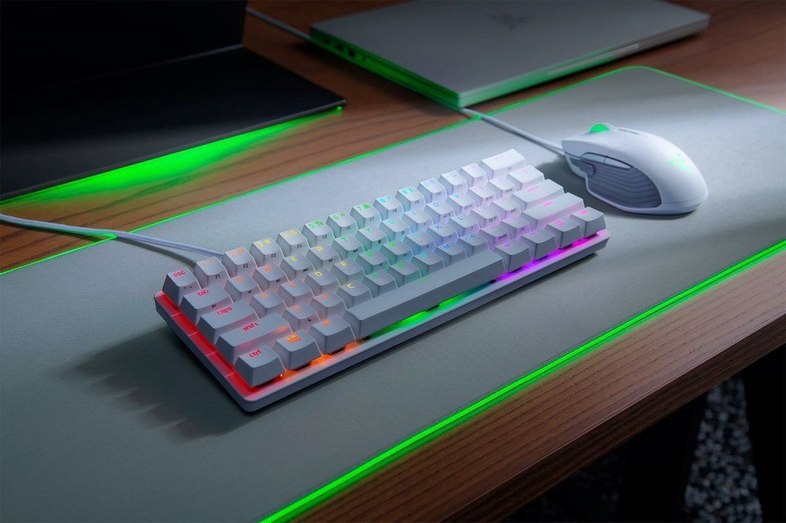

Man ļoti patīk labas un kvalitatīvas laviatūras. Vēl labāk ir, ja tās ir mehāniskās klaviatūras. Šī klaviatūra, kas jums ir parādīta bildē ir Razer Hunstman mini white edition. Šādu klaviatūru es gribētu dabūt ziemassvētkos.
Mechanical switches have always been superior for speed and accuracy, and before 2010, they were only used for typing – because they were made precisely for that purpose. Razer then made the radical decision to use mechanical switches for a gaming keyboard, and that birthed the world’s very first gaming mechanical keyboard, the Razer BlackWidow. Four years later, Razer redefined the limits of gaming performance by creating mechanical switches that were designed specifically to meet the demands of gaming - the Razer™ Mechanical Switch was born.
Nopērciet šādu klaviatūru220.lv.